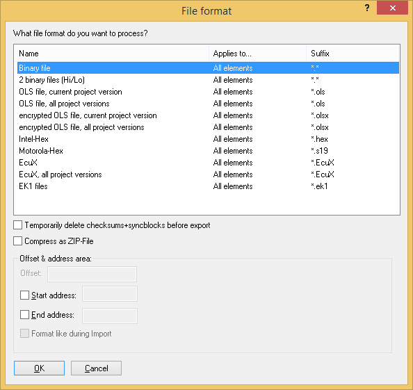

|
The dialog File format |

  
|
|
The dialog File format |
|

This dialog is shown during import and export. You can configure the type of file(s) you want to import/export. At the top you can choose file format. Several formats are available. Some of them are only visible depending on the project type selected in the project properties or if the respective plugin is installed. (Export: Plugins may not appear due to shadow data restrictions.)
All of the following options are only visible if they are supported by the selected format:
Individual checkboxes:
| · | Temporarily delete checksums + sync blocks before export [Only export] Removes the mentioned properties and restores the original values (only while exporting) |
| · | Compress as Zip-File [Only export and when the file format isn't already compressed] |
| · | Create new version [Only import] Creates a new project version when importing (instead of overwriting the current) |
| · | This file may not be reimported into WinOLS [Only export BxxToGo] The created file can only be used in BdmToGo / BslToGO. Not in WinOLS. (This option does not modify the programmed data and thus does not offer any protection against re-reading the data from the ECU. To get that kind of protection, activate the option "BDM read protection" in the dialog "Properties: Project". It will place a marker into the data and thus the re-read project can only be imported into a WinOLS that is registered to your customer number.) |
| · | Export only active element [Only binary / Intel Hex / Motorola Hex export] By default WinOLS exports always the entire projects. For some file formats you can limit the export to individual elements (if there are several). |
| · | File version [Only export ols] For compatibility reasons you can export an older version of the ols file format. |
Code data & swap lines: [Only binary / Intel Hex / Motorola Hex if encryption / swapping is configured in the project]
It is possible to encrypt data and lines just like it would be done with the integrated eprommer. In oder to activate this option you must enable encryption in the producer dialog and select a key file.
Optionally swapping of data lines can be activated, which is done just like it would be done when you are using the integrated eprommer. In order to activate this option you must select a producer and activate the swapping of data lines.
Offset & address area: [Only binary / Intel Hex / Motorola Hex]
Here an offset can be configured for Intel-Hex / Motorola-Hex files for the addresses in these files. Furthermore an address range can be configured if you want to handle only a part of the project. When importing this option is only available if the project already contains a version. It is always available when exporting.
For Intel-Hex / Motorola-Hex files you can tell WinOLS to mimic the file format of the imported file. This is only available when the file was imported from the same file format. It helps you communicate with other programs that require the file to have a certain format (within the standard).
Project rights: [Only olsx export]
Allows you to configure the project rights when exporting to limit the rights when the file is reimported.
Password and customer number: [Only olsx export]
You can make sure that the file can only be imported if you know the password and / or use a WinOLS with the right customer number.
Security areas: [Only BdmToGo/BslToGo export]
You can choose up to 3 areas, which should be compared with the ECU before programming. This was introduced to protect the user from using the wrong ECU and it is also a copy protection for your work. Simply include the VIN into the checked areas and the file can only be programmed into the desired vehicle (and not into all other similar vehicles). It is recommended to mark the areas by comments. If you use the comment names "BDM1", "BDM2" or "BDM3", WinOLS will recognize the comments and automatically enter the marked areas into this dialog.
Which elements should be exported? [Only BdmToGo/BslToGo export]
Here you can select which elements should be programmed later on. Elements that contain differences between original and version are printed in bold.
Shortcuts
| Symbol bar: | - |
| Keyboard: | - |